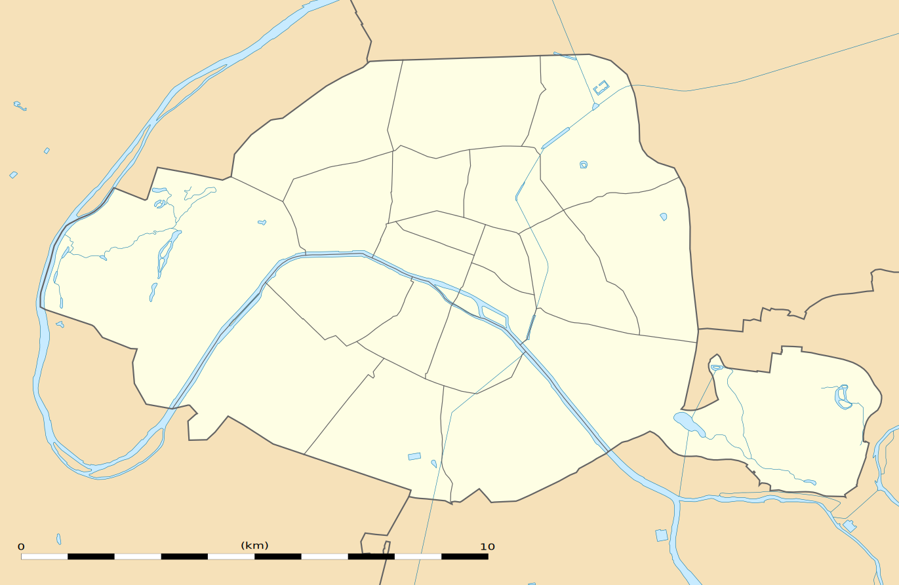

Famous Landmarks of Paris
Below is a table listing some of the most famous attractions in Paris:
| Attraction | Location |
|---|---|
| Eiffel Tower | Champ de Mars |
| Louvre Museum | Rue de Rivoli |
| Notre-Dame Cathedral | Ile de la Cite |
Paris is the capital of France, is renowned for its art, fashion, gastronomy, culture, and numerous iconic landmarks.

Below is a table listing some of the most famous attractions in Paris:
| Attraction | Location |
|---|---|
| Eiffel Tower | Champ de Mars |
| Louvre Museum | Rue de Rivoli |
| Notre-Dame Cathedral | Ile de la Cite |
Beyond its monuments, Paris thrives as a center for art and culture. Its cafes, galleries, and street performances contribute to a lively atmosphere.
Listen to the night ambient sounds of Paris:
Enjoy a brief video of Eiffel Tower:
Simple map of Paris:
